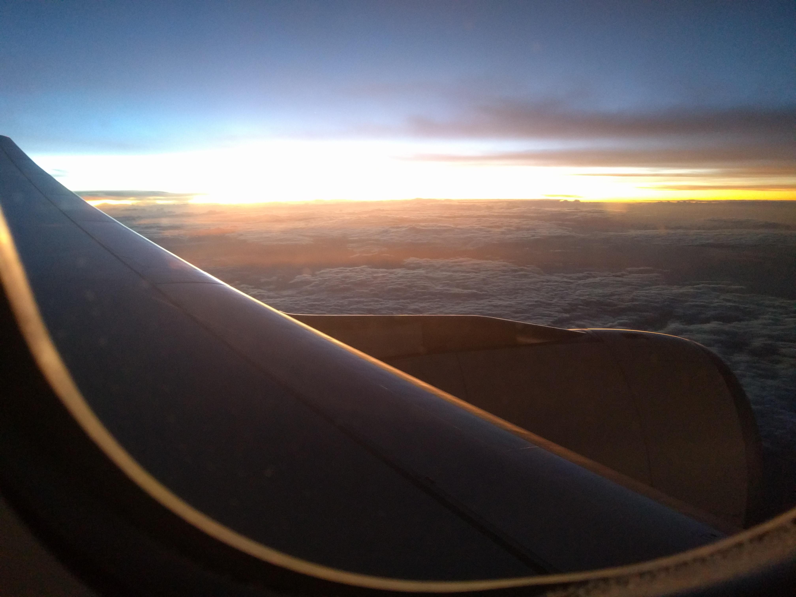

A "short" update about blogs and elephants
By Martin Stoffers
tl;dr I updated my website – We’re in Africa! – No elephant pictures in this post (sorry)
As you may notice, I didn’t update my blog for a long period. Mostly for two reason. First, I was busy studying in Leipzig. If you like, you can read a really short recap in my about section on my portfolio page. The second reason was, that I wanted to update my whole website. Octopress, the blog software I used, was really outdated, but I didn’t find a proper software to go with and not the time to set up my own environment until now. The new website is entirely build with Django 1.9.
The new website is supposed to be a more personal website and not just a blog. Friends may leave some posts here, whenever we do something cool together. So lets start over…
As some of you may already notice, since yesterday my close friend Evita and I staying in South Africa, and we will stay for another three weeks. Evita is going to put a longer post online, later the day. Provide you with her personal impressions and some of the beautiful pictures we took so far. At least one picture, showing the beautiful sunrise over Africa, as a teaser for next update.
